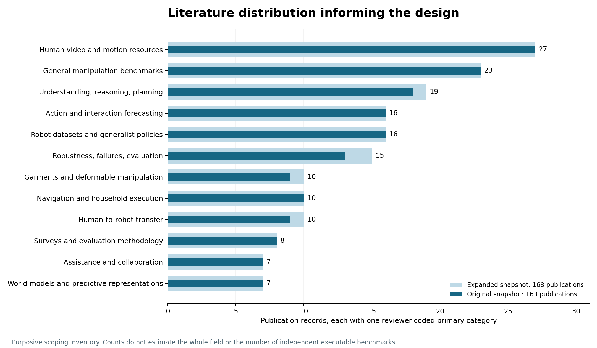

章節目錄與附錄
規模目標、比較與 milestones完整原生來源盤點01研究目標與當前狀態02用一個例子理解整套系統03規模的六個 granularity levels04文獻地圖、Ego 與預測研究05和既有 benchmark 比，哪些可以復用06完整 benchmark 的覆蓋設計07示範、標註、資料切分與有效性08評測協定、指標與比較方法09六個詳細情境：從概念到驗收10難度如何量化11題數、領域與執行預算12工程實作、資料格式與發布13論文流程與 milestones14版本口徑、閱讀結論與尚待決策48 個任務家族180 個情境藍圖24 個 Ego 題型40 個指標完整分類軸原生規模比較168 篇文獻來源與資料字典文獻地圖、Ego 與預測研究
- 168 篇來源分成十二個主分類，含影片、Ego、預測與操作。
- 文獻篇數比例不能直接當作領域缺口或出題比例。
- 書目、摘要閱讀和程式重現的證據深度分開。
蒐集範圍與證據強度
原始文獻檢索截止 2026-09-20；設計補充與規模查核至 2026-09-21。原始 43 組 arXiv queries 返回 555 個候選 ID，其中 5 組達到 60 筆上限。候選結果再結合具名基礎工作，形成 163 篇快照；補入 5 篇後共 168 篇。
這是目的性的範疇綜述，不是窮盡所有論文的系統性普查。原 163 筆核對書目，其中 50 篇明確記錄完整摘要閱讀；補充 5 篇核對原始 metadata 與摘要，部分另查全文段落。尚未逐篇完成全文、程式和實驗重現，分類也沒有第二位獨立標註者。
原始研究需求中的「eco-predix」在舊檢索中沒有精確匹配，故沿用「egocentric prediction 與 Ego 命名相關工作」的暫定範圍，不把它宣稱為已找到的某個特定專案。完整查詢與未解決線索收在附錄 H。
文獻 taxonomy 與分佈
每篇只有一個主分類供計數；角色 B（benchmark）、D（dataset）、M（method）、I（infrastructure）、S（survey／evaluation methodology）可以重疊。107 筆 benchmark 貢獻標記不是 107 套獨立可執行 benchmark。
| 主分類 | 原 163 篇 | 現 168 篇 | 168 篇內比例 |
|---|---|---|---|
| V · 人類影片與動作資料 | 27 | 27 | 16.1% |
| Q · 理解、推理與規劃 | 18 | 19 | 11.3% |
| P · 未來動作與互動預測 | 16 | 16 | 9.5% |
| M · 一般操作 benchmark | 23 | 23 | 13.7% |
| D · 布料與柔性物操作 | 9 | 10 | 6.0% |
| N · 導航與家務執行 | 10 | 10 | 6.0% |
| R · 穩健性、失敗與評測品質 | 13 | 15 | 8.9% |
| T · 人類觀測到機器人轉移 | 9 | 10 | 6.0% |
| G · 機器人資料與通用策略 | 16 | 16 | 9.5% |
| C · 輔助與協作 | 7 | 7 | 4.2% |
| W · 世界模型與預測表示 | 7 | 7 | 4.2% |
| S · Survey 與評測方法 | 8 | 8 | 4.8% |
文獻主分類 V／Q／P 合計 62/168（36.9%），表示本次來源包含許多執行上游研究；不代表整個領域有同樣比例。柔性物、協作等主分類篇數較少，也不能推論該領域沒有相關工作或缺乏大套件。

各脈絡提供什麼
| 脈絡 | 已收錄的代表工作 | 對本設計的用途 |
|---|---|---|
| VLOG／教學與程式 | VLOG、HowTo100M、COIN、CrossTask、YouCook2、Assembly101、IKEA ASM | 多領域程式、剪輯與旁白、必要步驟、可推斷性；旁白不是 robot action P001 P002 P003 P004 P005 P015 P016 |
| 第一／第三視角與身體 | Charades-Ego、EPIC、Ego4D、Ego-Exo4D、HOI4D、HOT3D、EgoBody、EgoHumans | 視角差異、手物接觸、姿態與動作品質；幾何比較依賴校準 P007 P009 P013 P014 P017 P018 P019 P020 |
| 理解／記憶／規劃 | EgoSchema、EgoThink、EgoPlan、EgoLife、OpenEQA、RoboVQA、EgoCross、RoboSpatial | T1／T2／T4、歷史必要性、空間與程式診斷 P028 P029 P030 P031 P033 P038 P039 P041 P042 |
| 一般操作與家務 | RLBench、Meta-World、LIBERO、CALVIN、ManiSkill、RoboCasa、VLABench、RoboTwin、BEHAVIOR、EAI | 模擬任務、controller、資產與 outcome 審核候選 P062 P063 P064 P065 P067 P071 P072 P074 P100 P101 |
| 柔性物與洗衣 | SoftGym、FlingBot、SpeedFolding、Cloth Funnels、UniFolding、GarmentLab、DexGarmentLab、MoDeSuite | 將展開、對齊、摺疊、收納、移動與材料驗證拆開 P085 P088 P089 P090 P091 P087 P167 P093 |
| 人類觀測到機器人 | UMI、EgoMimic、EgoDex、EgoScale、EgoZero、EgoBridge、WatchAct、RoboReel、Imitator Game | 配對關係、retargeting、目標／計畫／控制與資料預算 P117 P118 P119 P120 P121 P122 P123 P124 P164 |
| 失敗與評測 | LIBERO-Plus、COLOSSEUM、REFLECT、AHA、EgoOops、RoboReward、RoboMME、LIBERO-Recover、SafeVLA | 擾動、診斷、恢復分母、近失敗、過程和評分器可靠性 P105 P107 P109 P110 P112 P111 P115 P165 P166 |
| 協作與世界模型 | HoloAssist、PARTNR、兩篇 HRIBench、NIABench、Assistax、V-JEPA 2、H2R、RoboWM | 協作知覺／策略分開；生成品質與固定 adapter 下的執行分開 P141 P143 P147 P168 P145 P148 P149 P151 P152 |
預測研究不能合成同一種題
| 目標 | 本次 P 類全部 16 篇 | 輸出與評測邊界 |
|---|---|---|
| 近期動作／環境線索 | RULSTM P046 AVT P047 EGO-TOPO P048 |
action label、time horizon；與場景／動作詞彙繫結 |
| 長期 action sequence | AntGPT P049 PALM P050 FUTR P055 |
序列與 edit／label 指標；固定 horizon 與候選數 |
| 下一物件／接觸／時間 | StillFast P052 Forecasting hands and objects P056 Motor attention and action forecasting P057 |
接觸物件、區域、時間；需連續時間與有效事件 |
| 手部／動作目標軌跡 | USST / EgoPAT3D trajectories P051 HandsOnVLM P053 EgoPAT3Dv2 P058 EMAG P059 Continuous 4D interaction forecasting P060 |
2D／3D／4D 分開；尺度、座標、可見性與 ADE／FDE |
| 第一人稱未來影片 | EgoVid-5M / EgoDreamer P054 | 視覺、狀態、接觸與可執行性分開 |
| 互動意圖／社會行為 | Interact with me P061 | 是否／何時互動、態度、動作；不是協作完成率 |
T3 問「接下來實際會發生什麼」，人可能會犯錯；T4 問「依目標應該做什麼」。它們可能有不同答案。接觸時間要有真即時間基準；剪輯影片的播放秒數不必等於物理時間。手部軌跡需要座標、尺度、可見性與 horizon，不能直接當作 robot joint actions。
原 163 篇中，38 筆短名含 Ego、60 筆有 egocentric-context 標記，聯集為 64 筆。補充 5 篇未完整重編舊 ego-context 欄位，保留 not_recoded。附錄 G 同時提供原 64 筆索引與全部 168 篇註釋書目，避免把 unknown 當成沒有 Ego 關聯。